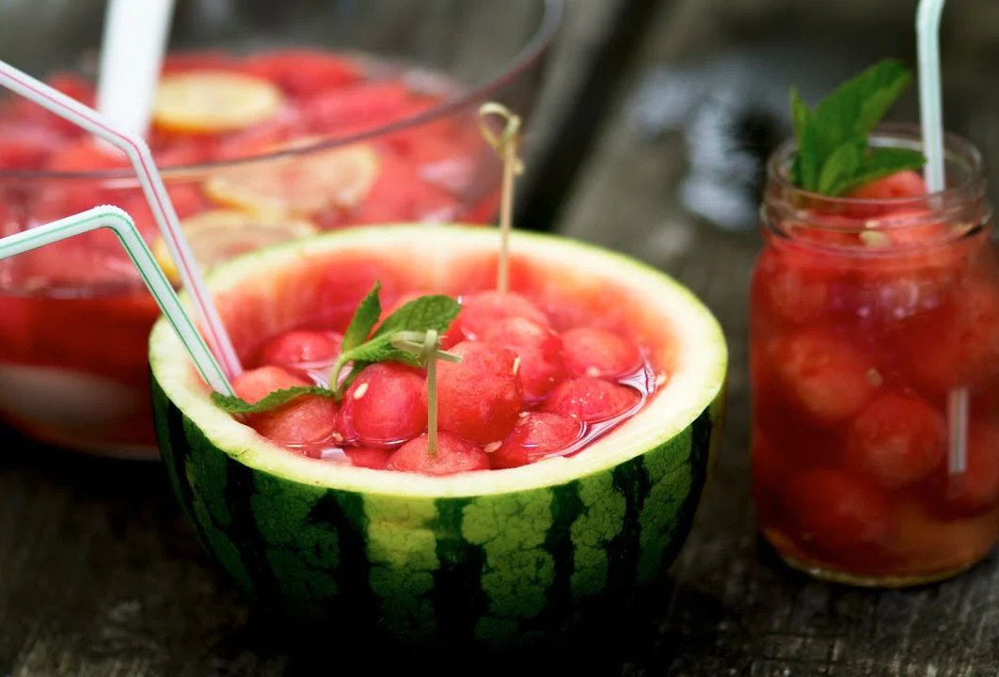

Hwachae is a general term used to refer to Korean non-alcoholic punches made from various fruits and edible flowers which have been soaked in honeyed water or honeyed magnolia berry juice. The most popular version of the fruit punch is Subak-Hwachae; made with slices or scoops of watermelon, bits of other fruits, ice, and honeyed watermelon juice.
Meal prep time : 20 minutes
Servings : 4